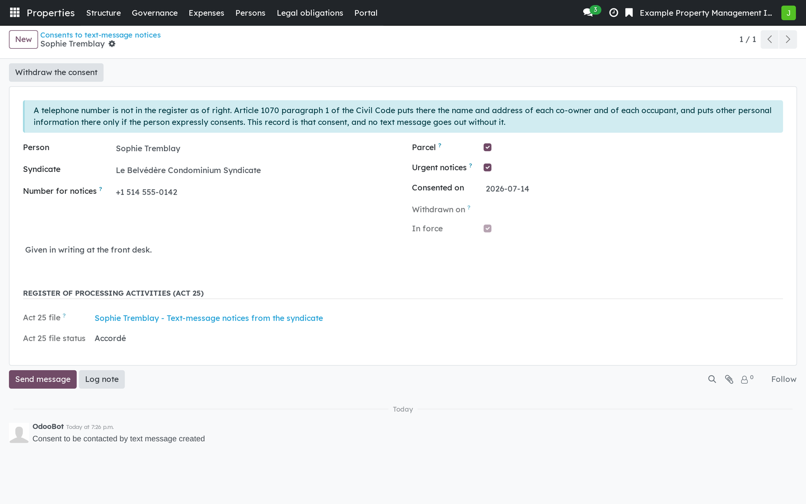
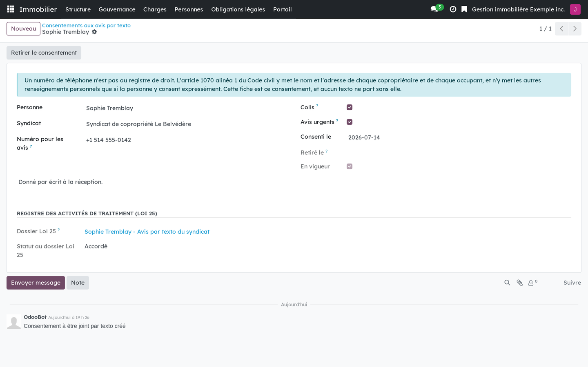

Version française plus bas.
A telephone number is not in the syndicate's register by right. Article 1070 para. 1 CCQ puts the name and postal address of each co-owner and occupant there, and other personal information only if the person expressly consents to it. This bridge between the occupant portal and text messaging therefore sends nothing without a consent on record. It receives nothing and holds no conversation, and it installs itself when both sides are present.

An express consent to text message notices, given to one syndicate and dated.
Requires Co-ownership: occupant portal (bf_property_portal) and SMS & Calls (bf_sms_archive). Installs automatically. The privacy bridge (bf_property_privacy) links each consent to its Act 25 file.
Business Source License 1.1. You may use this module in production for your own internal business operations, which include administering immovables that you own or that you are constituted to administer, and letting a person acting on your behalf use your instance for that purpose. Administering immovables for the account of others, or providing the module to third parties as a product or service, whether hosted, managed or resold, requires a separate written agreement with the licensor. Each version converts to LGPL-3.0-or-later on the Change Date stated in the LICENSE file, which sets out the exact terms.
Le numéro de téléphone n'est pas au registre du syndicat de plein droit. L'art. 1070 al. 1 C.c.Q. y met le nom et l'adresse de chaque copropriétaire et de chaque occupant, et les autres renseignements personnels seulement si la personne y consent expressément. Ce pont entre le portail de l'occupant et la messagerie texto n'envoie donc rien sans un consentement consigné. Il ne reçoit rien, ne converse pas, et s'installe de lui-même quand les deux côtés sont présents.

Un consentement exprès aux avis par texto, donné à un syndicat et daté.
Exige Copropriété : portail de l'occupant (bf_property_portal) et SMS & Calls (bf_sms_archive). S'installe automatiquement. Le pont vie privée (bf_property_privacy) rattache chaque consentement à son dossier Loi 25.
Business Source License 1.1. Vous pouvez utiliser ce module en production pour vos propres activités internes, ce qui comprend l'administration des immeubles dont vous êtes propriétaire ou que vous êtes constitué pour administrer, et l'usage de votre instance à cette fin par une personne qui agit pour votre compte. Administrer des immeubles pour le compte d'autrui, ou fournir le module à des tiers comme produit ou service, hébergé, géré ou revendu, exige une entente écrite distincte avec le concédant. Chaque version passe sous LGPL-3.0 ou ultérieure à la date de changement inscrite au fichier LICENSE, qui fait foi.